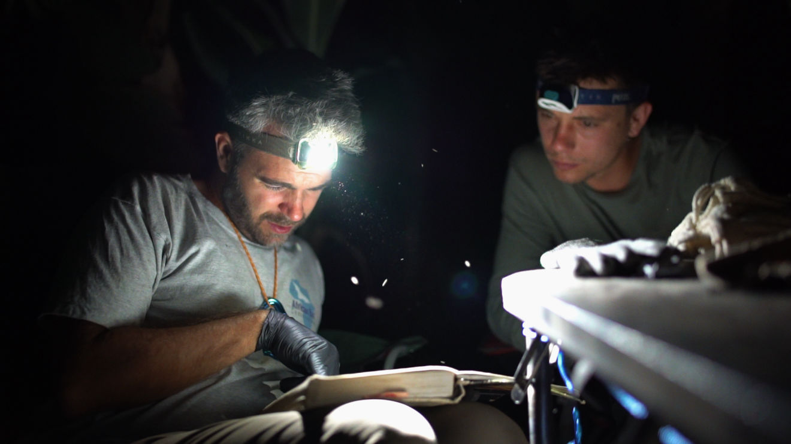
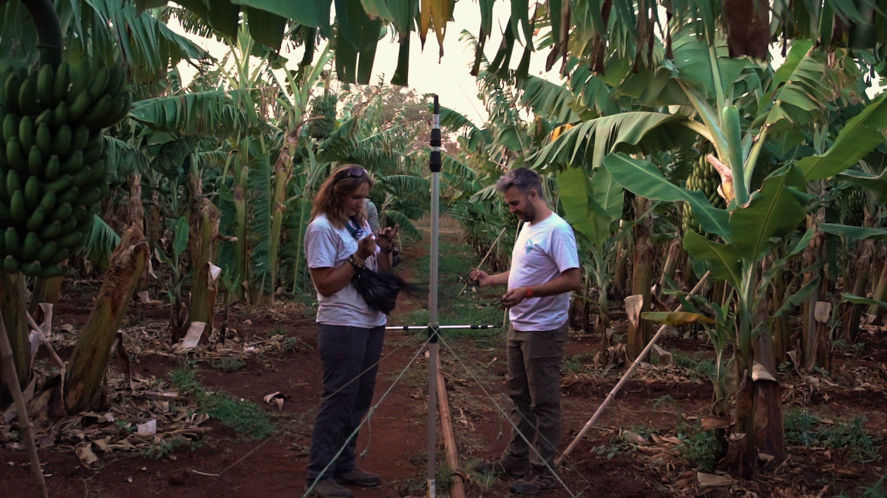
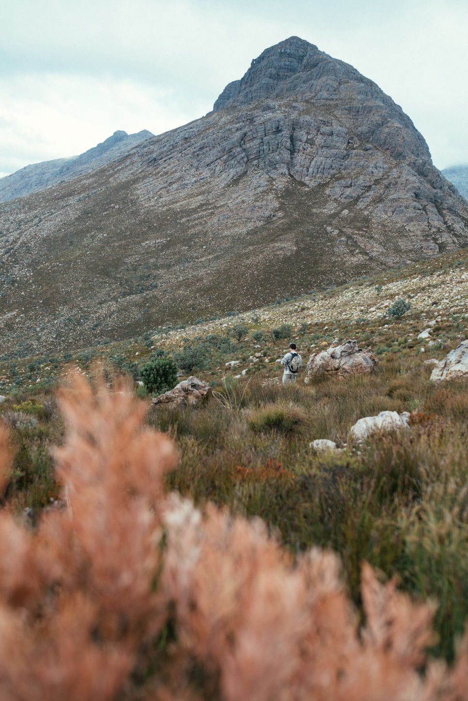
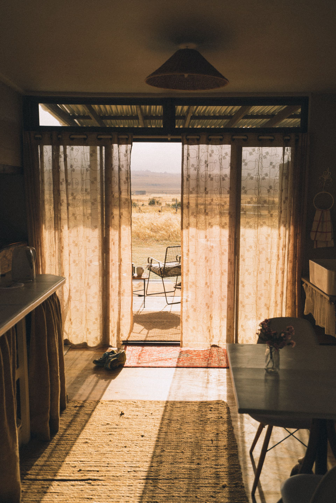
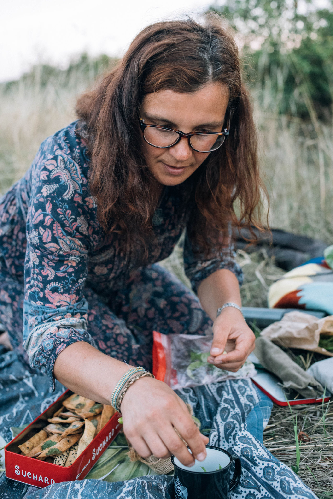

Whether you’re curious about video storytelling or want your brand to reach the right people, you’re in the right place. We’re Katy and Eugene and for over 8 years we’ve helped NGO's and small businesses create videos that make audiences watch, care, and act. Along the way, we’ve learned how understanding storytelling lets you spot when someone’s trying to influence you and make smarter choices with your own content.
In this post, we’ll share the principles, tips, and frameworks behind storytelling videos that get real results.


Why bother with video storytelling?
1. Engagement – Videos with story arcs hold attention longer.
2. Emotional Connection – Humans respond to ups and downs, stakes, and relatable characters.
3. Memorability – Sensory details (how did it feel), characters, and real-life scenes make you stick in peoples minds.
4. Conversions – Storytelling increases clicks because audiences act on emotion.
5. Differentiation – Your personal quirks, obsessions, and voice make you stand out. Storytelling brings your ideal people.

Here are our top video storytelling tips:
Signature & Voice
1. Personality – What do you love, what are your quirks. If you had a family shield for you or your brand what would be on it?
2. Strong, Active Language –Use words that feel alive and direct, instead of passive or vague language. Use sentences that are short and clear.
3. Show, Don’t Tell – Don’t just say it, illustrate it with things people can see, hear, or feel. Don't be vague.
4. Write like you’re talking to a friend
Story Structure & Narrative
1. Story Arc – Beginning (setup) → Middle (conflict) → End (resolution).
2. Create Stakes and Conflict – Without risk, stories are boring. What happens if the character fails?
3. Flip Expectations – Take a familiar setup and do something unexpected, it keeps people curious
4. Build a Universe – Similar to your personal signature, what are things that pop up in your brand or life, objects, locations, or characters.
Curiosity & Engagement
1. Curiosity Gap & Cliffhangers – Hold off on giving all the info until later.
2. Mini Payoffs + Big Payoff – Reward viewers with small insights regularly; save the main payoff for the end.
3. Micro-Mystery Objects & Words – Keep audiences guessing briefly.
4. Numbers & Concrete Promises – “5 Steps to…” makes content tangible.
Emotion
1. Key Universal Truths – Human truths like love, fear, desire, failure, or growth resonate deeply.
2. Emotional and Human Elements – Show highs, lows, humor, vulnerability.
3. Ups and Downs – Mix hope and fear, excitement and suspense.
4. Social Proof – Mention experts or testimonials.
Editing, Visuals & Attention
1. False Peaks – Tease mid-story, then deliver a bigger twist.
2. Editing – Change visuals every fews seconds, hook within first few seconds.
3. Goldilocks Zone – Give 70–90% of information upfront, save closure for later.
4. Anticipation – Trigger reward expectation to keep attention.
Reuse & Longevity
Repeat – Remember to repeat your key messages in your storytelling video
Creating a storytelling video doesn’t have to be overwhelming. Follow this step-by-step video storytelling framework:
1. Keep a Journal of Stories in Your Life
Start by collecting stories in your everyday, even small moments can be interesting stories.
Did something funny, frustrating, or surprising happen today?
Did you client achieve something amazing with your help?
Your own challenges and aha moments.
2. Write Like a Friend
Imagine a friend or ideal customer reading or watching your storytelling video.
Use simple language, humor, and honest observations.
Perfection is boring, your mistakes, and personality make you relatable.
3. Brainstorm Benefits
What problem does your product solve? How does it help people?
Will it save time, reduce stress, improve confidence?
4. Start with a benefit
Brainstorm the idea you need to convey eg. the benefit of your brand or a helpful lesson you want to teach and then brainstorm stories that illustrate them or look in your journal of stories.
5. Start with a story
Start with a story from your journal or brainstorm a story and then think about how you can link it to what you want to say eg. the benefit of your brand or a helpful lesson you want to teach.
6. Use The Story Arc
Use the story arc, Beginning (setup) → Middle (conflict) → End (resolution) to frame your ideas, there are more detailed story arcs, 5 step, 7 step etc. I will go into them in a later blog post.
7. How-To With A Story
If you want to teach something, this video storytelling framework works well.
1. Hook: Give a big reason to watch.
2. Story: Introduce a small, relatable moment that sets the stage.
3. Insight: Share a human truth or key takeaway.
4. How-To Steps: Break your lesson into clear, actionable steps.
5. Optional Brand Tie-In: Show how your product or service helps without making the video feel like an ad.
Having a storytelling video structure is really helpful to make sure your messaging is clear to your ideal audience.

If you are wondering how to make a storytelling video it's also helpful to have an understanding of the common storytelling frameworks in books and films.
1. Overcoming the Monster
What it is: The hero faces a great evil or threat and defeats it.
Example: Jaws, Harry Potter
2. Rags to Riches
What it is: The protagonist comes from humble beginnings to success.
Example: Cinderella, Aladdin
3. The Quest
What it is: A journey to achieve a goal, facing obstacles and growing along the way.
Example: The Lord of the Rings, Indiana Jones
4. Voyage and Return
What it is: The hero enters a strange or unfamiliar world, learns lessons, and returns transformed.
Example: Alice in Wonderland, The Wizard of Oz
5. Tragedy
What it is: The hero faces downfall or moral failure (Tragedy)
Example Tragedy: Macbeth
If we understand video storytelling, we start noticing it everywhere movies, books, ads, news, politics. Once you see how stories are built, you can spot when someone’s trying to influence you, and make smarter choices instead of just going along with it. Here's a few ways the media and politicians use storytelling.
Tell One Emotional Story – A single vivid story sticks in people’s minds and makes abstract ideas real.
Use a Scary Moment – Turning an event into a narrative of danger makes people emotionally invested, like a mini “story arc.”
Make It About Who You Are – Personalizes the story; people feel like they are part of the narrative.
Act Like the Victim – Creates empathy and tension, a classic narrative structure of conflict and sympathy.
Share Only the Good Parts – Curating the story emphasizes the “plot” you want people to remember, shaping perception like a crafted narrative.

You should now have a good understanding of how to create a storytelling video and how to tell your brands story through video. Learning about storytelling helps you create content that people relate to, inspires and helps them, and encourages them to take action. It also helps you spot when someone’s trying to influence you, so you can make smarter choices.
At Munjiri Videos, we use these same principles to help non-profits and brands share their stories, whether through social media on their websites. If this approach resonates with you, we’d love to hear about your story and help you bring it to life. You can reach me here
katy@munjiri.com

Brand Video Production
Social Media Video Production
Nature Video Production
Creative Video Productions
Charity Video Production
Drone Videographer
Event Video Production
Product Video Production
Travel Video Production
Learn Video Making
Video Storytelling
Video Making Tips
Video Marketing & Social Media Strategies
Nature Stories
Behind the Scenes
Client Stories
Locations & Travel
Location
Based in Portugal and South Africa, offering video production services worldwide.
Email: katy@munjiri.com
Get updates and free resources.